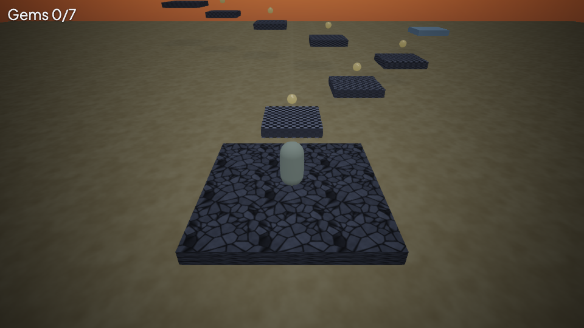

T32 Full game workshop — Sunset Gems (3D)
Make Sunset Gems, a compact 3D jumping game. The player climbs a winding chain of stone platforms, double-jumps toward gold gems and finishes by collecting all seven. You will work on the existing 3D platformer project, learn what every gameplay piece does, redesign part of the route and export a playable web folder.
Allow: 60–90 minutes. You need: Nord Editor, keyboard, a writable project folder and a browser with WebGL. Everything needed by this example is bundled. The terminal commands assume nord is available; in an engine checkout its binary is target/debug/nord. This is a keyboard game with a following camera, not an FPS mouse-look game.
1. Create a personal game#
In the welcome screen choose New project → 3D platformer and create sunset-gems. This copies the working starter into your folder. The bundled example is named platformer3d; the template ID used by the CLI is platformer-3d.
nord new sunset-gems -t platformer-3d
nord serve sunset-gemsOpen the printed local address if using the browser. Editor users can press Play. Keep a backup before you start changing physics or scripts.
| File or object | What you will change |
|---|---|
scenes/main.scene.json |
All platforms, gems, Player and Camera |
Player → scripts/platformer3d.js attributes |
Speed, jump strength and double jump |
Camera → scripts/camera-follow3d.js attributes |
Target, framing and smoothing |
scripts/collect.js |
Gem counter, victory message and low-Y recovery |
Mover → scripts/physics-moving-platform.js |
Travel distance and cycle time |
Edit your personal project. If you are maintaining the engine's bundled example, its source is tools/examples/platformer3d/; the generated examples/ copy is not the source of truth.
2. Learn the original route#
Press Play and click the game for focus. WASD or arrows move along world axes. Space jumps. Release and press Space again in the air for the double jump. The camera follows from behind; move a little in each direction to understand the screen relationship before attempting a gap.
The seven stepping stones are named Plat0 through Plat6, with one gem above each. The blue Mover is a side feature rather than a required gem platform. You can complete the original seven-gem objective without using it.
Try the first two gems. Notice the HUD changes from Gems 0/7 to Gems 1/7. Collecting all gems shows All gems collected!. Restart with Stop/Play or reload the browser page.
There is a large sandy ground below the route. Missing a jump may land you on sand rather than kill you. The script only teleports you back when Y drops below -8; do not assume every missed jump triggers that condition. For this tutorial the sand is a forgiving practice floor.
Checkpoint: movement works, the camera follows Player, and touching the first gem removes it and increments the counter exactly once.

3. Read the scene as a game designer#
Stop Play and open the main scene. Select Player. Its capsule mesh provides a visible character; its dynamic rigidbody and capsule collider make it fall and land. Its player tag lets pickups recognize it. platformer3d.js moves it, while collect.js owns the goal counter.
Select Plat0. A platform is a box mesh with a material, static rigidbody and collider. The transform position is its centre. Here, Y goes up and X/Z lie across the floor. This is different from a 2D canvas, where increasing Y usually moves down.
The route starts on Start at [0, 0.25, 0]. Plat0 is [0, 0.25, 6], Plat1 is [4, 0.9, 10], and later platforms turn left while climbing. Changing a mesh's visible colour does not change its collision. Removing its collider does.
Checkpoint: identify the Start, Player, Camera, Plat0, Gem0 and Mover before editing any of them. Select by Hierarchy name if clicking overlapping meshes is awkward.
4. Tune a jump before moving the world#
Select Player. In its scripts/platformer3d.js attributes, keep speed at 6, change jumpSpeed from 8.5 to 9, and explicitly set doubleJump to true if the Inspector shows it. Save and Play.
Try three jumps: tap Space, hold Space, then press it twice with a release between presses. A tap cuts the rise early; holding gets more height; the second press grants the air jump. The controller also includes short coyote-time and jump-buffer windows, making near-edge input more forgiving.
Stop Play and change only speed to 5. Test the same first gap. This comparison shows why a stronger jump does not automatically solve a large horizontal gap: time in the air and forward speed work together. Restore speed 6 after the comparison.
Checkpoint: the first two platforms can be reached repeatedly. If not, improve their spacing before adding enemies, timers or a death floor.
5. Build a friendlier first landing#
Move Plat1 from [4, 0.9, 10] to [3, 0.9, 9]. Move Gem1 to [3, 2.1, 9], keeping it 1.2 units above the platform's centre. Change transforms through Inspector or the transform.pos arrays of those named scene entries.
Save and test. You have shortened the diagonal approach and kept the reward over the landing. The next platform, Plat2, is still at [8, 1.6, 14]; confirm that this next jump remains possible. A local improvement can create a difficult outgoing jump, so always test the platform before and after the one you change.
If you want wider first steps, change both the box mesh size and its collider size from [3, 0.5, 3] to [4, 0.5, 4]. Keep these dimensions matched. Do not use a collider that is visibly smaller than the landing unless you deliberately want an unforgiving edge.
Use green material colours for safe landing stones and a warmer colour for the final stone. This is a readability choice: players should recognize the route without needing to inspect the scene tree.
Checkpoint: you can start on Start, collect Gem0, land on edited Plat1, collect Gem1 and continue to Plat2. Your capsule stands on the entire visible landing.
6. Add an optional reward the correct way#
Duplicate Gem0, rename it GemBonus, and put it at [0, 2.5, 0] above the starting platform. Keep its gem tag, pickup script, spin script, static rigidbody and trigger collider. If duplicating through JSON, assign a fresh unique entity ID as well as the new name; editor Duplicate does this for you.
Save and restart. The counter should now read Gems 0/8, because collect.js counts all entities tagged gem when the scene starts. Jump into the bonus gem and confirm Gems 1/8.
The pickup's kind must remain score. Its score value does not determine the number in this game's gem counter: the collection script increments once for each pickup event. Avoid adding unrelated health or ammo pickups in this workshop, because the current counter listens to the global pickup event without filtering by type.
For your final seven-gem course, delete GemBonus, save and restart. The counter returns to seven. This exercise shows how scene data and script logic jointly define an objective.
Checkpoint: adding a tagged gem changes the total; removing it changes the total back; collecting it only adds one to the count.
7. Make the moving platform readable#
Select Mover. Its initial position is [14, 2.4, 22], its size is [3, 0.5, 3], and its kinematic body is driven by physics-moving-platform.js. The initial offset [0, 0, 8] moves it along Z; its period is 5 seconds.
Change period to 7 to give the player more boarding time. Keep carryTag as player. Do not add a second motion script or change the body to dynamic: this platform is script-driven.
For a separate practice exercise, temporarily move Mover to [5, 0.25, 0] and reduce its offset to [0, 0, 3]. It is now beside Start, so you can test boarding without replaying the entire climb. Save, Play, step aboard and observe a whole outward/return cycle. Restore its original position and offset afterward, or leave it as a practice attraction that does not block the main route.
Checkpoint: the platform moves repeatedly and a standing Player travels with it. If it slides underneath the character, check carryTag and the Player's tag, then inspect Console.
8. Frame the next decision#
Select Camera. Its follow script targets the entity named Player, with offset [0, 5, -8] and smoothing 4. Try offset [0, 6, -10] for a wider view, keeping the target unchanged. Save and play through the first bend.
Choose the framing that shows the current platform and the next landing together. If the player becomes too small, move back toward the original offset. Keep one active gameplay camera. A second camera is not needed to solve a framing problem.
The camera also has bloom, FXAA, tone mapping and a vignette. If bright gems lose their shape, reduce bloom before increasing brightness. Make the level readable first; use effects to support that readability.
Checkpoint: the first bend can be navigated without guessing where the next landing is. Movement remains aligned to world axes even when the camera framing changes.
9. Verify the whole goal and recovery#
Read scripts/collect.js. At start it stores the spawn position and counts gem entities. On pickup it updates the label; when the count reaches the total it creates the victory message. Its update checks whether Player has fallen below killY and teleports back to spawn.
Test a full run after deleting the temporary bonus gem. Collect every gem, including the last one at the top of the route. Confirm the message appears when the counter reaches seven. Then Stop/Play and verify a clean counter and restored gems.
To test low-Y recovery without making the ground disappear, use a disposable copy of your project: delete the Ground entity, keeping Start and all stepping stones. Save, Play and walk off Start into the empty space. The character should fall and teleport back onto Start after crossing killY. Restore Ground from your backup before continuing. A sand landing inside the ground's area is expected to be safe; it does not test the low-Y branch.
Before release, check:
- The first jump teaches the controls and does not require perfect timing.
- Every gem is reachable and visible from a sensible approach.
- Changed platforms have matching visible and collision dimensions.
- The moving platform carries the player and cannot trap the main route.
- Seven collected gems produce victory; restarting resets the run.
- Console contains no script errors.
10. Export the actual game#
Save all project files. Use Project → Export… and choose the normal web folder target. From the parent directory of your project, the terminal equivalent is:
nord check sunset-gems
nord build sunset-gems --out sunset-gems-web --zip
python3 -m http.server 8001 --directory sunset-gems-webOpen http://localhost:8001 and repeat movement, gem collection, moving-platform boarding and victory in that exported copy. Keep the entire output folder intact when uploading, including libraries, scripts, skybox faces and textures. Use the zip when a host expects an HTML game archive.
If the page is blank, inspect Console and verify WebGL is enabled. Missing textures usually indicate an incomplete upload or changed filename. If the game opens an old route, save the scene, rebuild, and confirm the server points at your new output. If a gem looks correct but cannot be collected, inspect its trigger collider, pickup script and Player tag.
Your finished game has a learnable route, a movement challenge, an explicit goal, moving scenery and an export you have actually played. A good next revision is a shorter alternative route with harder jumps; preserve the tested easy route until the new one is fun.